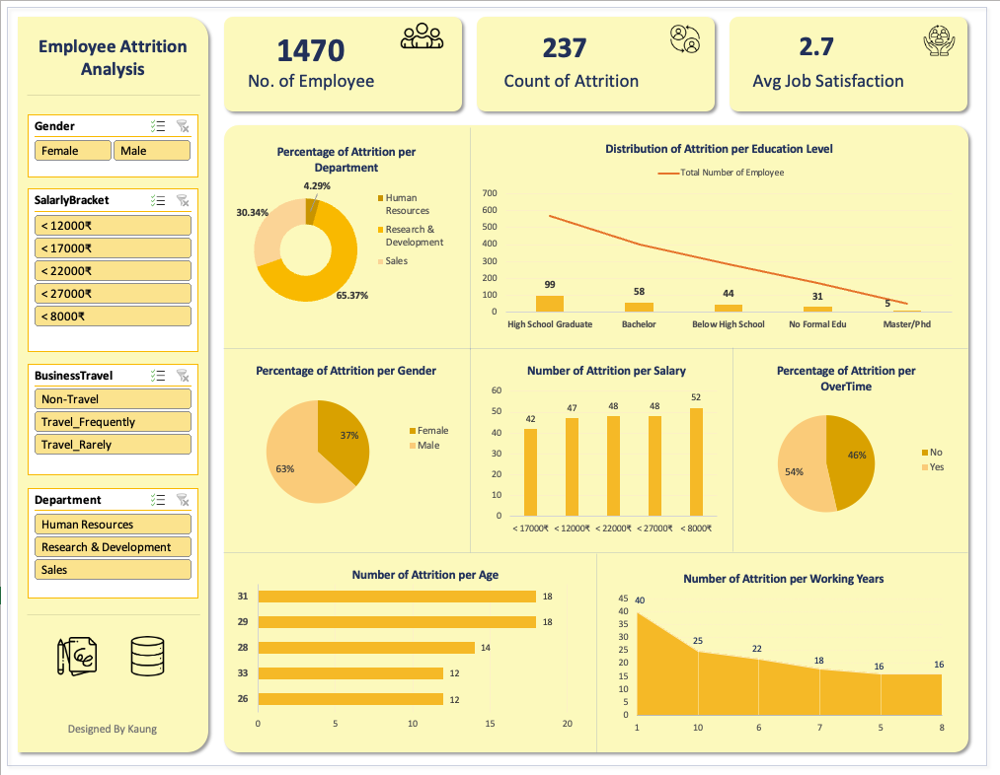

This Excel dashboard project focuses on analyzing employee attrition trends to help HR departments identify key factors contributing to employee turnover. The goal was to gain actionable insights from historical employee data and visualize critical metrics that influence attrition across various dimensions.
Excel Source File: Go to Excel
Dataset Source: HR Analytics Dataset

The dataset was cleaned and categorized into key segments such as department, salary brackets, education level, and working years. A pivot table-driven dashboard was built using slicers and Excel charts (bar, pie, donut, and line) to enable interactive filtering by gender, business travel, department, and salary bracket. Insights revealed strong correlation between low job satisfaction, frequent travel, and employee attrition.
Age, BusinessTravel, Department, EducationLevel, Gender, JobSatisfaction, MonthlyIncome, SalarlyBracket, OverTime, TotalWorkingYears, YearsAtCompany, isAttrition
Microsoft Excel (Pivot Tables, Charts, Slicers, Conditional Formatting)
By analyzing the dashboard, we can get a clear understanding of attrition trends across different departments, salary levels, genders, and working years. These observations enable us to recommend HR strategies that help reduce turnover and improve employee satisfaction.
The data reveals that employees with lower job satisfaction and salaries below ₹8000 are more likely to leave the organization. HR should consider revising compensation structures and conducting engagement surveys to understand employee dissatisfaction.
The Research & Development department shows the highest attrition rate, while HR has the lowest. Conducting internal assessments or feedback sessions in R&D could help pinpoint issues and improve retention.
Males account for a larger proportion of attrition. Also, employees working overtime are more likely to leave. Promoting a balanced work culture and monitoring overtime hours may help improve retention.